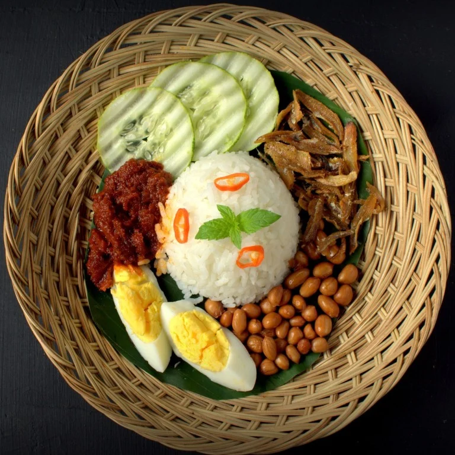

Malay Cuisine
Traditional Malay cuisine encompasses a rich diversity of dishes and cooking techniques that are rooted in the different cultures and regions of Malaysia. Influenced by indigenous traditions and interactions with Arabic, Chinese, Indian and Thai cuisines, Malay cuisine is known for its vibrant flavors and aromatic ingredients such as lemongrass, turmeric, coconut milk and a variety of chili peppers. Malay cuisine emphasizes a balance of sweet, spicy and savory flavors, often with the addition of fresh herbs and spices to create complex layers of flavor. Signature dishes include nasi lemak (coconut milk rice with sambal beans, anchovies and peanuts), rendang (curried beef or curried chicken) and satay (grilled meat skewers with peanut sauce). Traditional Malay food is often served in public, reflecting the importance Malay culture places on sharing and gathering.

Nasi Lemak
Often considered the national dish of Malaysia, Nasi Lemak consists of fragrant rice cooked in coconut milk and tamarind leaves. It is usually served with a variety of condiments, including sambal (a spicy chili sauce), fried anchovies (ikan bilis), roasted peanuts, sliced cucumbers, and hard-boiled or fried eggs. Some versions also include side dishes such as slow-cooked (rendang) meat, fried chicken or squid sambal.
Rendang
Rendang is a rich and spicy meat dish, usually made with beef (beef rendang) or chicken, slow-cooked in a mixture of coconut milk and a variety of spices such as lemongrass, galangal, garlic, turmeric, ginger and chili. The cooking process takes several hours and the meat becomes tender, the flavors of the spices infuse it, and the coconut milk turns into a thick sauce.
Satay
Satay consists of marinated meat (usually chicken, beef or lamb) skewered and grilled, served with a spicy peanut sauce for dipping. The meat is marinated in a spice mix of turmeric, coriander, cumin and lemongrass, which gives off a distinctive aroma and flavor. Satay is usually served with cucumber slices, onions and compressed rice cakes (ketupat or nasi impit). It is a popular street food and a favorite at night markets and local restaurants throughout Malaysia.
Indian Cuisine
Traditional Indian cuisine is a varied and complex cuisine that reflects India's rich cultural heritage and regional diversity. It is characterized by the extensive use of a wide variety of spices, herbs, vegetables and fruits, giving each dish a unique flavor and aroma. Traditional Indian cooking techniques include roasting, grilling, frying and steaming for staple foods such as rice, lentils and a variety of flatbreads such as naan, roti and paratha. Indian cuisine is known for its balance of spicy, sweet, sour and savory flavors, and dishes such as curry, bhiyani, tandoori chicken and samosa are popular. In addition, Indian cuisine has been influenced by religious and cultural practices, resulting in a wide variety of vegetarian and non-vegetarian dishes, each with its own unique flavor. Traditional Indian cuisine is not only a source of food for the people, but also a symbol of hospitality and community, and is usually enjoyed during large gatherings and festivals.
Biryani
Biryani is a fragrant and flavorful rice dish made with layers of basmati rice, spices, and meat (such as chicken, mutton, or fish), or vegetables. The dish is cooked slowly to allow the ingredients to blend perfectly, and it often includes aromatic spices such as saffron, cardamom, cloves, and cinnamon. Biryani is usually garnished with fried onions, raisins, and nuts, and it can be served with raita (a yogurt-based side dish), salan (a spicy curry), or pickles. This dish is a staple at celebrations and festive occasions across India.
Dosa
Dosa is a thin and crispy pancake made from a fermented batter of rice and black lentils. Originating from South India, dosas are typically served hot with a variety of fillings, such as spiced potatoes (masala dosa), and accompanied by chutneys and sambar (a lentil-based vegetable stew). Dosas are not only a popular breakfast item but also enjoyed as a snack or meal throughout the day. Their versatility and combination of flavors make them a beloved dish across India.
Butter Chicken(Murgh Makhani)
Butter Chicken is a rich and creamy curry made with tender pieces of chicken cooked in a mildly spiced tomato sauce enriched with butter and cream. The chicken is marinated in yogurt and spices before being cooked, which gives it a tender and flavorful taste. The sauce includes ingredients like garlic, ginger, cumin, and garam masala, making it aromatic and slightly sweet. Butter Chicken is often enjoyed with naan (Indian flatbread), roti, or steamed rice, and it is a favorite in both home cooking and restaurants.